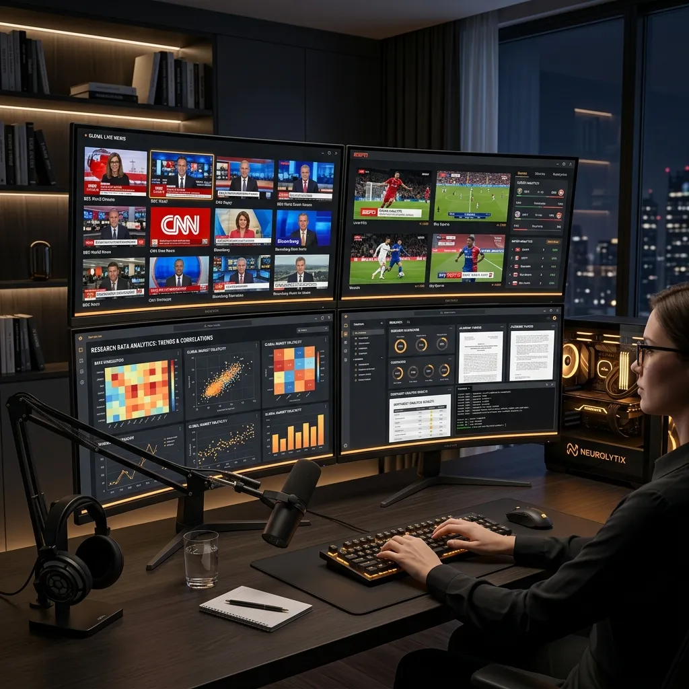

Best Multiview Video Players for 2026: Reviews and Comprehensive Comparison

As we navigate through 2026, the way we consume digital media has fundamentally shifted. Passive, single-stream viewing is increasingly being replaced by active, multi-dimensional information gathering. Whether you are a day trader monitoring global markets, a journalist tracking breaking news across multiple networks, or a pro-gamer watching several viewpoints of a tournament, the quality of your multiview video player is paramount. In this comprehensive review, we evaluate the top players on the market to help you choose the best command center for your digital life.
The Evolution of Multi-Stream Consumption
The concept of "Picture-in-Picture" (PiP) was once considered advanced. Today, power users laugh at a single PiP window. The modern standard is the "Video Grid"—a scalable, interactive environment where dozens of streams can be managed with precision. The challenge for developers in 2026 has been optimizing these grids to run within the browser without causing system-wide crashes or excessive "playback latency."
Finding the right balance between ease of use, feature density, and technical performance is the key to a great multiview experience. Let's look at how the leading tools compare.
1. YoutubeMulti: The All-Around Champion
YoutubeMulti has cemented its position as the industry leader by focusing on a "Web-First, Speed-Focused" philosophy. Unlike older iterations of multiviewers, YoutubeMulti is built on a custom engine optimized specifically for the 2026 browser ecosystem.
- Scalability: Supports up to 100 concurrent screens with intelligent resource management.
- Customization: Users can create custom layouts, save session templates, and use "Hover-to-Focus" audio controls.
- Platform Integration: Beyond just YouTube, it seamlessly integrates TikTok, Facebook, and various live streaming protocols into a single unified grid.
The real "killer feature" of YoutubeMulti is its ability to bypass standard browser tab limitations, allowing for dozens of high-definition streams without the dreaded "automatic pausing" that plagues basic setups.
2. GridPlayer: The Desktop Powerhouse
For those who prefer a native application over a web-based tool, GridPlayer remains a very strong contender. It is particularly useful for professionals who need to mix live web streams with local video files stored on their hard drives.
GridPlayer excels in low-level hardware control, allowing you to manually assign GPU resources to specific windows. However, its interface can be daunting for casual users, and the lack of cloud-based session syncing means you are tied to a single machine. It is the "VLC" of multiview players—powerful, but utilitarian.
3. Legacy Tools: ViewSync and multiwatch youtube
Tools like ViewSync and multiwatch youtube paved the way for the current generation of players. However, in 2026, they are starting to show their age. ViewSync remains a simple, no-frills option for quickly sharing a handful of videos with friends, but its lack of advanced layout controls and high-velocity performance optimizations makes it less suitable for professional use.
multiwatch youtube, once a fan favorite, has struggled to keep up with the changing security protocols of major video platforms. Users often report issues with "embedded playback disabled" or frequent buffering when trying to scale beyond a 3x3 grid.
Technical Deep Dive: Web vs. Native
One of the most common questions we receive is: "Why use a web-based player like YoutubeMulti when I can run a desktop app?" The answer lies in accessibility and the ever-improving power of WebGL and WebAssembly.
Modern web-based players offer "zero-install" convenience, meaning you can access your custom newsroom from a laptop at a café, a workstation at the office, or even a high-end tablet. Furthermore, because web players run in a sandboxed environment, they are inherently safer from the security vulnerabilities that can plague unpatched desktop software. In 2026, the performance gap between web and native has all but vanished for 95% of use cases.
Feature Comparison Table
| Feature | YoutubeMulti | GridPlayer | multiwatch youtube |
|---|---|---|---|
| Max Streams | 100+ | Device Limited | 9 |
| Cloud Sync | Yes | No | No |
| Audio Control | Advanced / Hover | Manual | Basic |
| Cross-Platform | Full | Partial | Limited |
Optimizing Your Command Center
No matter which YouTube multi-viewer you choose, your hardware plays a major role. To run 50+ streams smoothly, we recommend at least 32GB of RAM and a dedicated GPU with at least 8GB of VRAM. While YoutubeMulti's optimization helps tremendously, there is no substitute for raw processing power when it comes to decoding multiple simultaneous HD video streams.
We also suggest using a high-bandwidth fiber connection. Even with compressed streams, a 10x10 grid of 1080p videos can consume significant bandwidth. Many users find success by setting their "secondary" streams to 480p and only keeping their "primary" monitoring focus at 4K resolution.
The Verdict: Choosing Your Player
If you are a professional researcher, social media manager, or news junkie, YoutubeMulti is the clear winner for its balance of power, portability, and sophisticated feature set. It offers a level of digital situational awareness that was once the exclusive domain of high-end CCTV monitoring rooms.
For home hobbyists who primarily watch locally stored content with the occasional web stream mixed in, GridPlayer is an excellent, robust alternative. However, for the majority of users who want a seamless, integrated, and high-performance multi-viewing experience across all their devices, the choice has never been clearer.